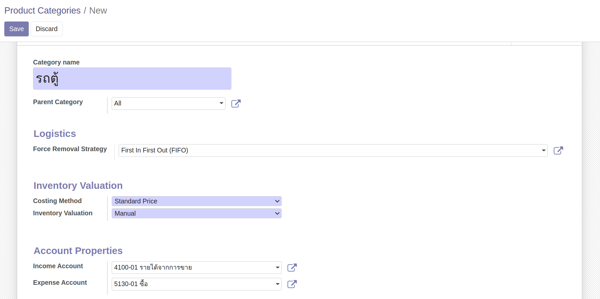

การสร้างข้อมูลหลัก (Master Data)
การสร้างรายชื่อคู่ค้า
Menu :: Contacts > Contacts
- กดปุ่ม Create เพื่อสร้างคู่ค้า
-
ระบบจะพาไปที่หน้าต่างของการสร้างคู่ค้า ให้กรอกข้อมูลส่วนบนดังนี้
-
(1) กรณีเป็นบุคคลทั่วไป (Individual) ให้กรอกข้อมูลดังนี้
- (1) First name: ชื่อ
- (2) Last name: นามสกุล

-
(2) กรณีเป็นบริษัทหรือสำนักงาน (Company) ที่ไม่ใช้บุคคลทั่วไปให้กรอกข้อมูลดังนี้
- (1) Name: ชื่อบริษัท

- (1) Name: ชื่อบริษัท
-
-
เมื่อกรอกชื่อของคู่ค้าเรียบร้อยแล้วให้ใส่รายละเอียดดังนี้
- (1) Street: ที่อยู่
- (2) Streer2: เขต
- (3) City: จังหวัด
- (4) State: ไม่ต้องกรอก
- (5) ZIP: รหัสไปรษณีย์
- (6) Country: ประเทศ
- (7) Tax ID: เลขประจำตัวผู้เสียภาษี
- (8) Tax Branch: สาขา
- (9) Phone: เบอร์โทรศัพท์ (ถ้ามี)
- (10) Mobile: เบอร์โทรศัพท์ (ถ้ามี)
- (11) Email: อีเมล (ถ้ามี)
- (12) Website Link: เว็บไซต์ (ถ้ามี)
- (13) Legal Form: คำนำหน้า
- (14) Tags: ไม่ต้องกรอก

-
หากต้องการกรอกข้อมูลเพิ่มเติมเกี่ยวกับคู่ค้าสามารถกรอกได้ตาม Tab ต่างๆ ดังนี้
- (1) Sales & Purchase ใช้สำหรับบันทึกข้อมูลเกี่ยวกับฝ่ายซื้อและขาย

- (2) Invoicing ใช้สำหรับบันทึกข้อมูลเกี่ยวกับทางบัญชี
- (1) Bank: ธนาคารของคู่ค้า
- (2) Account Number: เลขที่บัญชีธนาคารของคู่ค้า
- (3) Account Receivable: เลขที่บัญชีที่ต้องการใช้บันทึกบัญชีฝั่งลูกหนี้
- (4) Account Payable: เลขที่บัญชีที่ต้องการใช้บันทึกบัญชีฝั่งเจ้าหนี้

- (3) Personal Income Tax ใช้สำหรับบันทึกข้อมูลในกรณีจัดเก็บภาษีแบบ PIT

- (4) Internal Notes ใช้สำหรับบันทึกข้อมูลอื่น

- (1) Sales & Purchase ใช้สำหรับบันทึกข้อมูลเกี่ยวกับฝ่ายซื้อและขาย
-
เมื่อตรวจสอบข้อมูลเรียบร้อยแล้วให้กด Save
การสร้างเลขที่บัญชี
Menu :: Invoicing > Configuration > Chart of Accounts
-
กดปุ่ม Create เพื่อสร้างเลขที่บัญชี และกรอกข้อมูลดังนี้
- (1) Code: เลขที่บัญชีที่ต้องการเพิ่มข้อมูล
- (2) Account Name: ชื่อเลขที่บัญชี
- (3) Type: ประเภทของเลขที่บัญชี
- (4) Allow Reconciliation: ใช้สำหรับต้องการกระทบยอดเลขที่บัญชี

-
หากที่ต้องการกรอกข้อมูลของเลขที่บัญชีเพิ่มเติมให้กด "Set Up"
-
ระบบจะแสดงหน้าต่างสำหรับการตั้งค่าเกี่ยวกับเลขที่บัญชีเพิ่มเติมดังนี้
- (1) Asset Profile: ใช้สำหรับเลขที่บัญชีที่ต้องการผูกกับหมวดหมู่สินทรัพย์
- (2) WHT Account: เลขที่บัญชีที่เกี่ยวข้องกับการบันทึกหัก ณ ที่จ่าย
- (3) Deprecated: ติ๊กเมื่อไม่ต้องการใช้งานเลขที่บัญชีนั้นแล้ว
- (4) Centralized: ติ๊กเมื่อไม่ต้องการให้บัญชีแยกประเภทไม่แสดงรายละเอียด
- (5) Default Taxes: ตั้งค่าให้ภาษีมูลค่าเพิ่มแสดงขึ้นเมื่อมีการใช้งานเลขที่บัญชี
- (6) Tags: ใช้สำหรับการผูกกับงบกระแสเงินสด (กรณีของสสน.ไม่ต้องใช้)
- (7) Allowed Journals: หากต้องการระบุสมุดบัญชีที่ต้องการใช้งาน

-
หากตั้งค่าเรียบร้อยแล้วให้กด Save
การสร้างสมุดบัญชีรายวัน
Menu :: Invoicing > Configuration > Journals
การสร้างสมุดรายวันเพิ่มเติมนอกเหนือจากสมุดรายวันที่มีอยู่ในระบบ ใช้สำหรับกรณีที่มีการเพิ่มบัญชีธนาคาร ซึ่งฝ่ายบัญชีจะต้องทำการสร้างสมุดรายวันเพิ่มในระบบดังนี้
-
กดปุ่ม Create เพื่อสร้างสมุดรายวัน และกรอกข้อมูลดังนี้
- (1) Journal Name: ชื่อสมุดรายวัน
- (2) Type: ให้เลือกเป็น "Bank"
- (3) Bank Account: ระบุเลขที่บัญชีที่ใช้บันทึกบัญชี
- (4) Suspense Account: บัญชีพักธนาคาร ใช้สำหรับการบันทึกในกรณีโอนเงินระหว่างธนาคาร
- (5) Short Code: รหัสของสมุดรายวัน
-
กรอกข้อมูลสำหรับบัญชีพักที่เพิ่มเติม Tab "Payments Configuration"
- (1) Outstanding Receipts Account: ระบุเลขที่บัญชีธนาคารสำหรับการบันทึกฝั่งรับ
- (2) Outstanding Payments Account: ระบุเลขที่บัญชีธนาคารสำหรับการบันทึกฝั่งจ่าย

-
หากตั้งค่าเรียบร้อยแล้วให้กด Save
วิธีการสร้าง Bank Account จากหน้าต่าง Journals
- (1) พิมพ์ชื่อ เลขบัญชีที่บรรทัด Bank Account

- (2) กด Create and Edit
- (3) ระบบจะแสดงหน้าต่างให้กรอกข้อมูลเพิ่ม
- (1) Code: เลขที่บัญชีที่ต้องการเพิ่มข้อมูล
- (2) Account Name: ชื่อเลขที่บัญชี
- (3) Type: ประเภทของเลขที่บัญชี
- (4) กด Save เพื่อบันทึกการสร้างรหัสบัญชี
การสร้างหมวดหมู่สินทรัพย์
Menu :: Invoicing > Configuration > Asset Profiles
-
กดปุ่ม Create เพื่อสร้างหมวดหมู่สินทรัพย์ และกรอกข้อมูลดังนี้
- (1) Name: ชื่อของหมวดหมู่สินทรัพย์
- (2) Asset Groups: กลุ่มของสินทรัพย์ที่ต้องการผูกในหมวดหมู่สินทรัพย์
- (3) Create an asset by product item: ใช้สำหรับการซื้อสินทรัพย์จำนวนหลายชิ้น ระบบจะแตกบรรทัดตามจำนวน เพื่อนำไปสร้างสินทรัพย์ในทะเบียนสินทรัพย์
- (4) Auto Asset Number by Sequence: ติ๊กสำหรับการออกเลขที่สินทรัพย์ตามหมวดหมู่
- (5) Journal: สมุดบัญชีสำหรับการบันทึกบัญชีเกี่ยวกับสินทรัพย์
- (6) Asset Account: เลขที่บัญชีสำหรับการบันทึกสินทรัพย์
- (7) Depreciation Account: เลขที่บัญชีสำหรับการบันทึกค่าเสื่อมราคาสะสมสินทรัพย์
- (8) 10. Depr. Expense Account: เลขที่บัญชีสำหรับการบันทึกค่าเสื่อมราคาสินทรัพย์
- (9) Plus-Value Account: เลขที่บัญชีสำหรับการบันทึกตัดจำหน่ายสินทรัพย์
- (10) Min-Value Account: เลขที่บัญชีสำหรับการบันทึกตัดจำหน่ายสินทรัพย์
- (11) Residual Value Account: เลขที่บัญชีสำหรับการบันทึกตัดจำหน่ายสินทรัพย์
- (12) Allow Reversal of journal entries: ใช้สำหรับกลับรายการค่าเสื่อมราคา
- (13) Time Method: วิธีการคิดช่วงเวลาของค่าเสื่อม
- (1) เลือก Number of Years or end date: เป็นการคิดค่าเสื่อมตามจำนวนปีที่เลือก หรือคิดค่าเสื่อมจนถึงวันที่กำหนด (End date) หรือ
- (2) เลือก Number of Depreciations: เป็นการคิดค่าเสื่อมตามจำนวนครั้งของการบันทึกค่าเสื่อม
- (14) Number of years:
- (1) หมายถึงจำนวนปีในการคิดค่าเสื่อม ถ้าเลือก Time method แบบ Number of years or end date
- (2) หมายถึงจำนวนครั้งของการบันทึกค่าเสื่อม ถ้าเลือก Time method แบบ Number of depreciations
- (15) Period Length: ช่วงเวลาในการคิดค่าเสื่อม ให้เลือกเป็น Month เนื่องจากต้องปิดงบการเงินทุกเดือน
- (16) Calculate by days: ติ๊กเมื่อต้องการคำนวณค่าเสื่อมตามจำนวนวันในเดือน
- (17) Computation Method: วิธีการคิดค่าเสื่อมราคา เลือกเป็น Linear up to Salvage เพื่อคิดค่าเสื่อมแบบเส้นตรง โดยราคามูลค่าคงเหลือสุดท้ายจะเท่ากับราคาซาก
- (18) Prorata Temporis:
- (1) ติ๊ก หากตั้งการให้เริ่มคิดค่าเสื่อมตั้งแต่วันที่ Asset start date
- (2) ไม่ติ๊ก หากต้องการให้เริ่มคิดค่าเสื่อมตั้งแต่วันแรกของปี (โดยปกติเราจะไม่เลือกวิธีนี้ เพราะเป็นการคิดค่าเสื่อมย้อนหลัง)
- (19) Skip Draft State: ติ๊กเมื่อต้องการข้ามสินทรัพย์สถานะ Draft

-
หากตั้งค่าเรียบร้อยแล้วให้กด Save
การสร้างกลุ่มสินทรัพย์
การสร้างกลุ่มสินทรัพย์ มีวัตถุประสงค์เพื่อนำไปใช้สำหรับการออกรายงานในทะเบียนสินทรัพย์ และจะต้องนำไปผูกไว้กับหมวดหมู่สินทรัพย์ (Asset Profile) โดยมีขั้นตอนการสร้างดังนี้
Menu :: Invoicing > Configuration > Asset Group
-
กดปุ่ม Create เพื่อสร้างกลุ่มสินทรัพย์ และกรอกข้อมูลดังนี้
- (1) Name: ชื่อของกลุ่มสินทรัพย์
- (2) Parent Asset Group: ให้เลือกเป็น "All Profile"

-
หากตั้งค่าเรียบร้อยแล้วให้กด Save
การสร้างข้อมูลหลักหมวดหมู่สินค้า
ผู้รับผิดชอบ สามารถจัดการข้อมูลหลักหมวดหมู่สินค้า (Product Categories) ได้ 2 ช่องทาง ตามสิทธิ์ของแต่ละผู้ใช้งาน
Menu: Purchase > Configuration > Product Categories
Menu: Invoicing > Configuration > Product Categories
โดยมีขั้นตอนดังนี้
-
กดปุ่ม Create

-
กรอกข้อมูล ดังนี้ 
- Category Name:
- Parent Category: เลือก Parent (ถ้ามี)
- Logistics
- Force Removal Strategy: เลือกการจัดการสต็อค
- First In First Out (FIFO)
- Last In First Out (LIFO)
- Force Removal Strategy: เลือกการจัดการสต็อค
- Inventory Valuation: การตีราคาสินค้าคงเหลือ
- Costing Method: เลือกการคำนวณต้นทุน
- Standard Price
- First In First Out (FIFO)
- Average Cost (AVCO)
- Inventory Valuation: การตีราคาสินค้าคงเหลือ
- Manual
- Automated
- Account Properties: การบันทึกบัญชี
- Income Account: เลือกบัญชีบันทึกรายได้
- Expense Account: เลือกบัญชีบันทึกค่าใช้จ่าย
- Costing Method: เลือกการคำนวณต้นทุน
- กดปุ่ม Save เพื่อบันทึกข้อมูล สามารถกดปุ่ม Edit ได้หากต้องการแก้ไขข้อมูล
การสร้างข้อมูลหลักสินค้า
ผู้รับผิดชอบ สามารถจัดการข้อมูลหลักสินค้า (Products) ได้ 2 ช่องทาง ตามสิทธิ์ของแต่ละผู้ใช้งาน
Menu: Sale > Products > Products
Menu: Purchase > Products > Products
โดยมีขั้นตอนดังนี้
-
กดปุ่ม Create

-
กรอกข้อมูลส่วน Header

- (1) Product Name: กรอกชื่อสินค้า
- (2) ทำเครื่องหมาย หาก Product นี้
- Can be Sold: สามารถขายได้
- Can be Purchased: สามารถจัดซื้อได้
- (3) ใส่รูป product (ถ้ามี)
-
ที่แท็บ General Information
- Product Type: เลือกประเภทของ product
- Consumable: วัสดุสิ้นเปลือง
- Storable: product ที่มีการรับเข้าสต็อค
- Service: product ประเภทการให้บริการ
- Product Category: เลือกหมวดหมู่ของ product เพื่อเชื่อมโยงกับการบันทึกบัญชี
- Internal Reference: รหัสภายใน (ถ้ามี)
- Barcode: บาร์โค้ดสินค้า (ถ้ามี)
- Sales Price: ตั้งราคาขาย (กรณี product นี้เปิดการขาย ระบบจะดึงราคานี้ไปแสดงเป็นค่าเริ่มต้นในใบเสนอราคา)
- Customer Taxes: ภาษีมูลค่าเพิ่ม (ถ้ามี)
- Witholding Tax: ภาษี หัก ณ ที่จ่าย (ถ้ามี)
- Cost: ราคาต้นทุน (กรณีเลือกบันทึกต้นทุน เป็น Standard price ระบบจะนำราคานี้ไปบันทึกต้นทุน)
- Unit of Measure: หน่วยนับ
- Purchase Unit of Measure: หน่วยนับสำหรับการรับเข้าสต็อค
- Product Type: เลือกประเภทของ product
-
ที่แท็บ Sales (จะแสดงแท็บนี้ เมื่อมีการเลือก Can be Sold)

- Invocing Policy: เงื่อนไขการออกบิล
- Ordered quantities: ออกบิลตามจำนวนที่ออเดอร์
- Delivered quantities: ออกบิลตามจำนวนที่ส่งของ
- Sales Description: กรอกคำอธิบายหรือรายละเอียดอื่นๆ (ถ้ามี) ซึ่งจะแสดงในเอกสาร Sale Orders และ Invoices
- Invocing Policy: เงื่อนไขการออกบิล
-
ที่แท็บ Purchase (จะแสดงแท็บนี้ เมื่อมีการเลือก Can be Purchased)

- Vendor Taxes: ภาษีมูลค่าเพิ่ม (ถ้ามี)
- Vendor Witholding Tax: ภาษี หัก ณ ที่จ่าย (ถ้ามี)
- Control Policy:
- On ordered quantities: รับวางบิลตามจำนวนที่ออเดอร์
- On received quantities: รับวางบิลตามจำนวนที่ได้รับของ
- Purchase Description: กรอกคำอธิบายหรือรายละเอียดอื่นๆ (ถ้ามี) ซึ่งจะแสดงในเอกสาร Purchase Orders
-
กดปุ่ม Save เพื่อบันทึกข้อมูล สามารถกดปุ่ม Edit ได้หากต้องการแก้ไขข้อมูล
End.